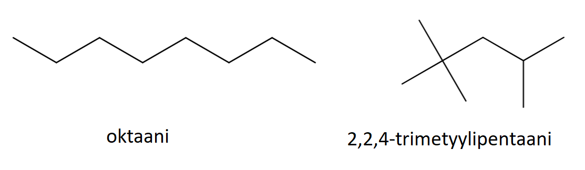
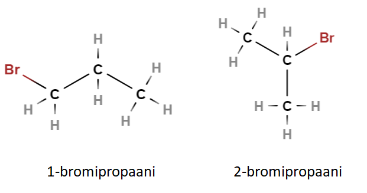
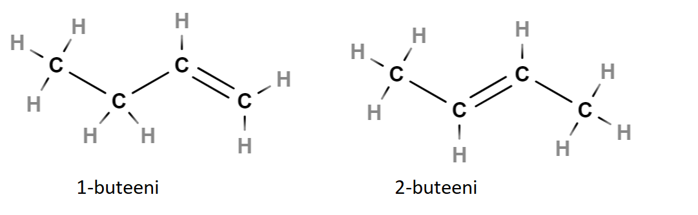
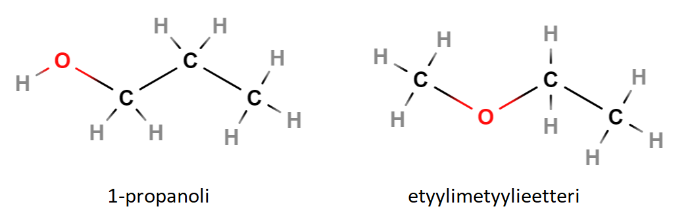
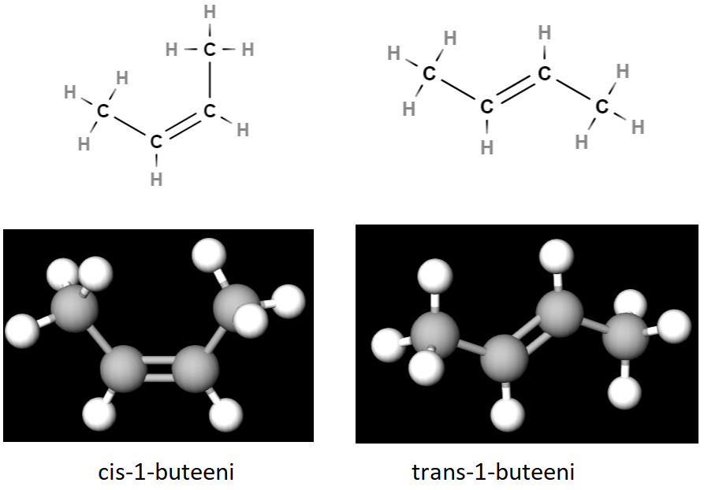
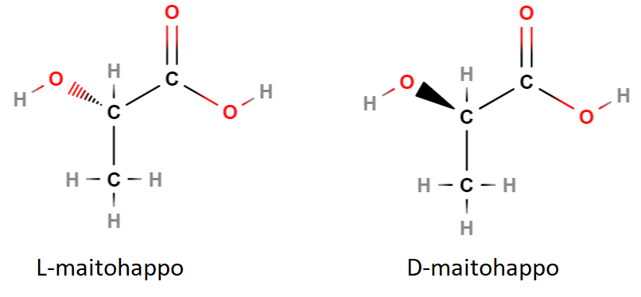
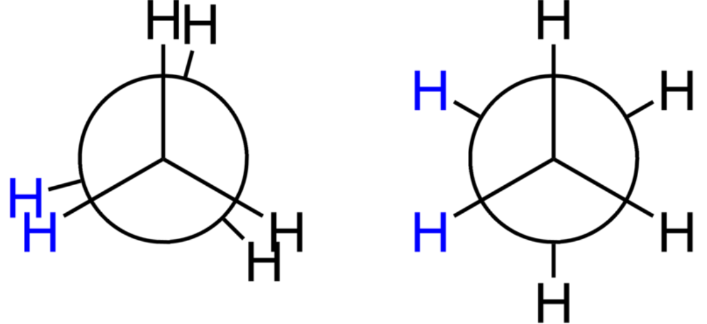

Rakennekaavat ja isomeria
Contents
Rakennekaavat ja isomeria#
Edellä todettiin, että sama molekyylikaava voi vastata useampaa kuin yhtä rakennekaavaa. Yhdisteet, joissa on täsmälleen samat atomit, mutta eri järjestyksessä, ovat toistensa isomeerejä. Isomerialla on erittäin suuri merkitys siihen, miten molekyyli reagoi kemiallisesti ja miten se käyttäytyy fysikaalisesti.
Isomeriaan kuuluu myös atomien erilaiset mahdollisuudet sijoittua molekyyliin kolmiulotteisessa tilassa. Molekyylin rakenne kolmessa ulottuvuudessa vaikuttaa esimerkiksi lääkeaineiden toimivuuteen. Kolmiulotteisen rakenteen tarkka mallinnus on vaativaa ja tehdään erityisillä tietokoneohjelmilla.
Isomeriaa on kahta tyyppiä, joista kumpikin voidaan jakaa kolmeen luokkaan:
Rakenneisomeria: ketjuisomeria, paikkaisomeria, funktioisomeria
Stereoisomeria: cis-trans -isomeria, optinen isomeria, konformaatioisomeria
Rakenneisomeria#
Rakenneisomeria tarkoittaa rakennekaavojen eroavaisuuksia kahdessa ulottuvuudessa. Rakenneisomeria liittyy joko yhdisteen hiiliketjuun, atomien tai sidosten paikkoihin molekyylissä, tai niin sanottujen funktionaalisten ryhmien esiintymiseen.
Ketjuisomeria
Ketjuisomeria tarkoittaa sitä, että molekyylien hiilivetyrunko on erilainen. Se voi olla suora tai haarautunut, ja joskus hiilet voivat muodostaa renkaitakin.
Esimerkiksi \(\text{C}_{18}\text{H}_8\) voi olla mm. kuvassa olevien yhdisteiden kaltainen:

Taulukossa on näiden isomeerien ominaisuuksia. Moolimassa on sama, koska kumpikin yhdiste sisältää täsmälleen saman verran samoja atomeja. Tiheydessä sekä sulamis- ja kiehumispisteessä on eroja. Erot johtuvat siitä, että suoraketjuiset molekyylit pääsevät helpommin lähelle toisiaan ja siten tarttuvat toisiinsa sähköisten vuorovaikutusten kautta tiukemmin. Niinpä molekyylejä on vaikeampi saada irtautumaan toisistaan eli sulamaan tai kiehumaan. Rakenteen tarkkaa vaikutusta näihin lämpötiloihin ei tarvitse tällä opintojaksolla pystyä perustelemaan.
ominaisuus |
oktaani |
2,2,4-trimetyylipentaani |
|---|---|---|
molekyylikaava |
\(\text{C}_8\text{H}_{18}\) |
\(\text{C}_8\text{H}_{18}\) |
moolimassa |
114.22 g/mol |
114.22 g/mol |
tiheys |
0.7 g/cm\(^3\) |
0.69 g/cm\(^3\) |
sulamispiste |
-56.8\(^{\circ}\) C |
-107\(^{\circ}\) C |
kiehumispiste |
126\(^{\circ}\) C |
99\(^{\circ}\) C |
Paikkaisomeria
Paikkaisomeriassa jonkin molekyylissä olevan atomin tai kaksois- tai kolmoissidoksen paikka eroaa. Atomin tai sidoksen paikka hiiliketjun päästä laskettuna ilmaistaan molekyylin nimessä numerolla. Myös paikkaisomeerien molekyylikaavat ja siten myös moolimassat ovat samat, mutta fysikaalisissa ominaisuuksissa voi olla eroja.
Alla olevat yhdisteet ovat nimeltään 1-bromipropaani ja 2-bromipropaani (kolmen hiilen ketjua, jossa ei ole kaksoissidoksia ja jossa vapaissa sidospaikoissa on pelkkiä vetyjä, kutsutaan propaaniksi).

Alla olevassa esimerkissä nimi buteeni tarkoittaa neljän hiilen ketjua, jossa on yksi kaksoissidos. Nimen etuliite \(1-\) tarkoittaa kaksoissidosta hiiliketjun alusta laskien ensimmäisen ja toisen hiilen välissä, ja etuliite \(2-\) tarkoittaa sidosta toisen ja kolmannen hiilen välissä. Huomaa, että 1-buteenissa numero on tosiaan 1 eikä 3. Hiilet on numeroitu alkaen siitä päästä ketjua, josta on lyhin matka kaksoisidokseen, siis oikealta.

Funktioisomeria
Funktioisomeriassa jotkin molekyylin atomeista ovat järjestäytyneet tietynlaiseksi ryhmäksi, joka vaikuttaa merkittävästi yhdisteen kemialliseen käyttäytymiseen. Kyse on siis paikkaisomerian erikoistapauksesta. Funktioisomeereillä on suuret erot kemiallisissa reaktioissa ja mm. kiehumispisteissä, ja ne myös nimetään eri periaatteilla. Myöhemmin käsitellään erilaisia funktionaalisia ryhmiä tarkemmin.

Kuvan vasemmanpuoleisessa molekyylissä (1-propanoli) happi on asettunut molekyylin päähän yhdessä vedyn kanssa. Tällaiset yhdisteet ovat yleisnimeltään alkoholeja. Ne noudattavat alkoholeille ominaisia sääntöjä reagoidessaan muiden aineiden kanssa. Oikeanpuoleisessa molekyylissä (etyylimetyylieetteri) happi on kahden hiiliatomin välissä. Tällaiset yhdisteet ovat yleisnimeltään eettereitä, ja ne reagoivat eri tavoin kuin esimerkiksi alkoholit. Myös fysikaaliset ominaisuudet eroavat toisistaan, kuten taulukosta selviää.
ominaisuus |
1-propanoli |
etyylimetyylieetteri |
|---|---|---|
molekyylikaava |
\(\text{C}_3\text{H}_{7}\text{OH}\) |
\(\text{C}_3\text{H}_{8}\) |
moolimassa |
60.10 g/mol |
60.10 g/mol |
tiheys |
0.80 g/cm\(^3\) |
0.73 g/cm\(^3\) |
sulamispiste |
-126.5\(^{\circ}\) C |
-113.0\(^{\circ}\) C |
kiehumispiste |
97.1\(^{\circ}\) C |
7.4\(^{\circ}\) C |
Stereoisomeria#
Stereoisomeria erottelee rakennekaavojen erilaisia versioita ja ottaa huomioon myös sen, että vaikka rakennekaavat yleensä piirretään tasokuvioina, niin molekyylit ovat todellisuudessa kolmiulotteisia.
Cis-trans-isomeria
Cis-trans-isomeriaa esiintyy molekyyleissä, joissa on vähintään yksi kaksoissidos. Kaksoissidoksen hiilissä olevat atomit tai atomiryhmät voivat olla samalla (nimen etuliite cis) tai eri puolella (nimen etuliite trans) kaksoissidosta. Tällainenkin isomerian muoto voi vaikuttaa aineen fysikaalisiin ominaisuuksiin.

Optinen isomeria
Optisessa isomeriassa rakenteet ovat toistensa peilikuvia. Alla olevassa esimerkissä, jossa on kaksi erilaista maitohappomolekyyliä, paksu sidosviiva tarkoittaa “kohti lukijaa” suuntautuvaa molekyylin osaa, ja katkoviiva tarkoittaa “poispäin lukijasta” suuntautuvaa molekyylin osaa. Kuvassa on esimerkkinä maitohapon optiset isomeerit. Ravinnossa (esim. hapanmaitotuotteet ja hapankaali) esiintyy D-maitohappoa, mutta ihmisen lihaksessa kovassa rasituksessa kehittyvä maitohappo on L-maitohappoa.

Esimerkiksi lääkkeitä valmistettaessa samassa prosessissa voi muodostua kumpaakin versiota molekyylistä. Joskus eri isomeerien toiminta poikkeaa toisistaan dramaattisesti ja lääkeaine saattaakin toimia haitallisesti, esimerkiksi talidomidikatastrofin tapauksessa.
Konformaatioisomeria
Molekyyleissä, joissa hiilten välillä on vain yksinkertaisia sidoksia, osa rakenteesta voi kiertyä eri asentoihin. Molekyyli voi vaihtaa asentoaan eri muotojen välillä ilman, että molekyylin sidokset katkeavat. Molekyyli ei voi kiertyä kaksois- tai kolmossidoksen ympäri.
Alla olevissa esimerkeissä on kahden hiilen ja kuuden vedyn molekyyli, jota tarkastellaan päädystä katsottuna. Vasemmanpuoleisessa kuvassa vastakkaiset vedyt sijaitsevat lähes samoilla kohdilla toisiinsa nähden. Tätä kutsutaan nimellä kohdakkainen konformaatio. Oikeanpuoleisessa kuvassa vedyt levittäytyvät mahdollisimman kauas toisistaan. Muotoa kutsutaan lomittaiseksi konformaatioksi.

Kuva: Wikipedia
{kind=link}